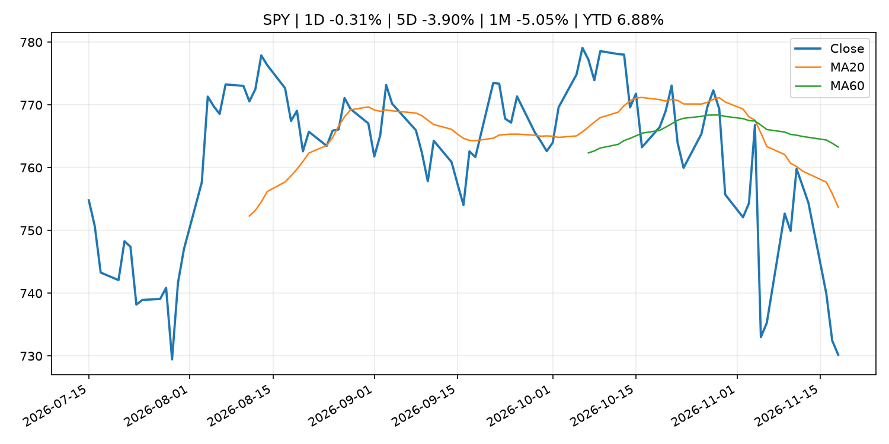
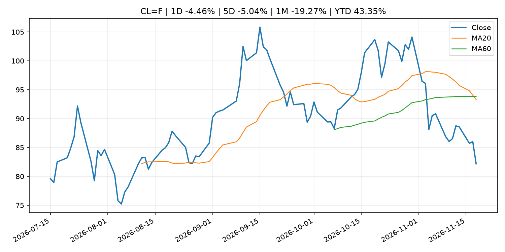
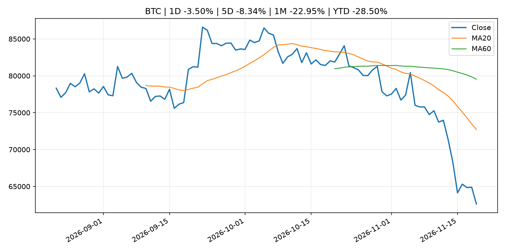

Global Macro Morning Briefing - 2026-11-19
Not financial advice / 非投资建议。
0. 今日总览
- 市场状态：unknown。市场信号不足，暂不判断明确状态。
- 今日三大主线：
- central_bank_decision: Fed’s Waller says central bank may need to ‘shock people’ with half-point rate hike
- central_bank_decision: Bitcoin outpaces gold even as both assets tumble ahead of a likely Fed rate hike
- financial_stability: Boris Vujčić: Financial Stability Review - November 2026
- 一句话结论：今日晨报重点关注：央行决策会重定价利率、汇率、久期资产和风险资产。；央行决策会重定价利率、汇率、久期资产和风险资产。。跨资产方面，SPY 1D -0.31%；QQQ 1D 0.39%；^VIX 1D -3.53%；TLT 1D 0.84%；GC=F 1D -3.44%；CL=F 1D -4.46%；BTC 1D -3.50%；ETH 1D -2.83%；市场信号不足，暂不判断明确状态。政策、通胀、利率、美元、美债、能源和加密监管仍是主要观察线索。所有结论仅基于公开数据与短摘要整理，不构成投资建议。
1. 隔夜跨资产市场
- 美股：SPY 1D -0.31%，QQQ 1D 0.39%，整体趋势需结合 VIX 和利率确认。
- 美债/美元：TLT 1D 0.84%，美元指数 1D 0.36%，是判断折现率压力的核心线索。
- 黄金/原油：黄金 1D -3.44%，原油 1D -4.46%，用于观察避险、通胀和地缘风险。
- 加密：BTC 1D -3.50%，ETH 1D -2.83%，关注是否独立于纳指走出加密自身行情。
- 港股/A股：恒生 1D -1.62%，沪深300/上证 1D n/a，重点看中国政策预期与人民币线索。
- 风险观察：关注后续数据是否确认当前跨资产信号。
US_EQUITY
| symbol | latest close | 1D | 5D | 1M | YTD | trend |
|---|---|---|---|---|---|---|
| SPY | 730.20 | -0.31% | -3.90% | -5.05% | 6.88% | strong_downtrend |
| QQQ | 659.51 | 0.39% | -4.47% | -8.10% | 7.57% | strong_downtrend |
| DIA | 501.73 | -1.10% | -4.33% | -4.32% | 3.74% | strong_downtrend |
| IWM | 270.12 | 0.40% | -4.58% | -2.05% | 8.58% | downtrend |
| VTI | 359.48 | -0.20% | -3.95% | -4.67% | 6.89% | strong_downtrend |
US_MACRO_MARKET
| symbol | latest close | 1D | 5D | 1M | YTD | trend |
|---|---|---|---|---|---|---|
| ^VIX | 24.56 | -3.53% | 40.42% | 41.88% | 69.26% | strong_uptrend |
| DX-Y.NYB | 103.86 | 0.36% | 0.93% | 2.10% | 5.53% | uptrend |
| TLT | 80.22 | 0.84% | -0.87% | 0.11% | -7.82% | range_bound |
| IEF | 90.67 | 0.29% | -0.30% | 0.47% | -5.63% | range_bound |
COMMODITIES
| symbol | latest close | 1D | 5D | 1M | YTD | trend |
|---|---|---|---|---|---|---|
| GC=F | 3,731.30 | -3.44% | -6.73% | -9.93% | -13.82% | strong_downtrend |
| SI=F | 45.03 | -4.79% | -13.21% | -21.98% | -36.19% | strong_downtrend |
| CL=F | 82.17 | -4.46% | -5.04% | -19.27% | 43.35% | strong_downtrend |
| BZ=F | 89.24 | -4.19% | -3.79% | -17.97% | 46.90% | range_bound |
| NG=F | 3.38 | 5.33% | 5.10% | 14.04% | -6.61% | range_bound |
| HG=F | 5.65 | -5.38% | -9.88% | -13.89% | 0.26% | strong_downtrend |
HK_MARKET
| symbol | latest close | 1D | 5D | 1M | YTD | trend |
|---|---|---|---|---|---|---|
| ^HSI | 22,918.46 | -1.62% | -4.54% | -3.10% | -12.98% | downtrend |
| 0700.HK | 350.40 | -6.01% | -12.14% | -11.02% | -43.76% | strong_downtrend |
| 9988.HK | 81.05 | -4.93% | -13.59% | -21.84% | -45.60% | strong_downtrend |
| 3690.HK | 67.90 | -3.21% | -5.83% | -9.10% | -35.09% | strong_downtrend |
| 1810.HK | 28.56 | -3.71% | -4.74% | 6.57% | -29.10% | strong_uptrend |
| 1211.HK | 63.00 | -1.64% | -6.74% | -11.45% | -36.20% | strong_downtrend |
CRYPTO
| symbol | latest close | 1D | 5D | 1M | YTD | trend |
|---|---|---|---|---|---|---|
| BTC | 62,619.15 | -3.50% | -8.34% | -22.95% | -28.50% | strong_downtrend |
| ETH | 1,771.35 | -2.83% | -8.33% | -24.86% | -40.36% | strong_downtrend |
| SOLANA | 73.29 | -2.44% | -6.34% | -28.37% | -41.14% | strong_downtrend |
| BINANCECOIN | 580.13 | -2.80% | -8.02% | -23.57% | -32.75% | strong_downtrend |
| RIPPLE | 0.96 | -2.10% | -4.83% | -27.36% | -47.72% | strong_downtrend |
2. 今日最重要的 10 条新闻
1. Fed’s Waller says central bank may need to ‘shock people’ with half-point rate hike
- 来源：CNBC Economy
- 时间：2026-11-18T15:13:39+00:00
- 地区：US
- 事件类型：central_bank_decision
- 重要性层级：Tier 1
- 一句话摘要：Continued inflation above the Fed's 2% target is pushing central bank officials into a more aggressive stance.
- 为什么重要：央行决策会重定价利率、汇率、久期资产和风险资产。
- 可能影响：主要影响 DXY，方向为 positive，强度 high；通胀压力可能推高政策利率预期并支撑美元。
- 资产：DXY 方向：positive 强度：high 原因：通胀压力可能推高政策利率预期并支撑美元。
- 资产：TLT 方向：negative 强度：high 原因：通胀上行通常推升收益率、压低长债价格。
- 资产：QQQ 方向：negative 强度：high 原因：更高利率对成长股估值折现率不利。
- 资产：SPY 方向：mixed 强度：medium 原因：名义增长可能支撑收入，但更高利率压制估值。
- 资产：GC=F 方向：mixed 强度：medium 原因：通胀对黄金是支撑，但实际利率上行会形成压力。
- 资产：BTC 方向：negative 强度：high 原因：流动性收紧通常压制高 beta 加密资产。
- 原文链接：https://www.cnbc.com/2026/11/18/federal-reserve-governor-christopher-waller.html
2. Bitcoin outpaces gold even as both assets tumble ahead of a likely Fed rate hike
- 来源：CoinDesk
- 时间：2026-11-18T10:58:36+00:00
- 地区：global
- 事件类型：central_bank_decision
- 重要性层级：Tier 1
- 一句话摘要：Bitcoin outpaces gold even as both assets tumble ahead of a likely Fed rate hike
- 为什么重要：央行决策会重定价利率、汇率、久期资产和风险资产。
- 可能影响：主要影响 QQQ，方向为 negative，强度 high；鹰派政策提高折现率，压制成长股估值。
- 资产：QQQ 方向：negative 强度：high 原因：鹰派政策提高折现率，压制成长股估值。
- 资产：SPY 方向：negative 强度：medium 原因：更紧政策通常削弱风险偏好。
- 资产：TLT 方向：negative 强度：high 原因：利率上行通常压低长债价格。
- 资产：DXY 方向：positive 强度：high 原因：更高利率预期通常支撑美元。
- 资产：BTC 方向：negative 强度：high 原因：流动性收紧通常压制高 beta 加密资产。
- 原文链接：https://www.coindesk.com/markets/2026/11/18/bitcoin-outpaces-gold-even-as-both-assets-tumble-ahead-of-a-likely-fed-rate-hike
3. Boris Vujčić: Financial Stability Review - November 2026
- 来源：ECB Press Releases
- 时间：2026-11-18T10:00:00+01:00
- 地区：EU
- 事件类型：financial_stability
- 重要性层级：Tier 1
- 一句话摘要：Boris Vujčić: Financial Stability Review - November 2026
- 为什么重要：金融稳定信号可能放大跨资产波动，并影响央行反应函数。
- 可能影响：可能影响利率、汇率、风险资产或大宗商品预期，但当前公开信息不足以判断明确方向。
- 资产：暂无明确资产映射
- 方向：unknown
- 强度：low
- 原因：公开信息不足以判断方向。
- 原文链接：https://www.ecb.europa.eu//press/key/date/2026/html/ecb.sp261118~86f1e8147e.en.pdf
4. Risks from AI valuations, fiscal imbalances and geoeconomic tensions weigh on financial stability outlook
- 来源：ECB Press Releases
- 时间：2026-11-18T10:00:00+01:00
- 地区：EU
- 事件类型：fiscal_policy
- 重要性层级：Tier 1
- 一句话摘要：Risks from AI valuations, fiscal imbalances and geoeconomic tensions weigh on financial stability outlook
- 为什么重要：财政和贸易政策会影响增长、通胀、企业利润和跨境资本流。
- 可能影响：可能影响利率、汇率、风险资产或大宗商品预期，但当前公开信息不足以判断明确方向。
- 资产：暂无明确资产映射
- 方向：unknown
- 强度：low
- 原因：公开信息不足以判断方向。
- 原文链接：https://www.ecb.europa.eu//press/pr/date/2026/html/ecb.pr261118~83c5c60158.en.html
5. ‘Nvidia’s turmoil has me spooked’: Should I sell my stocks and buy real estate — or ride out the storm?
- 来源：MarketWatch Top Stories
- 时间：2026-11-19T00:30:00+00:00
- 地区：US
- 事件类型：earnings
- 重要性层级：Tier 2
- 一句话摘要：Tempted to ditch stocks for property or CDs? Take a deep breath before making any sudden moves.
- 为什么重要：大型科技股盈利和资本开支会影响纳指、半导体和 AI 交易主线。
- 可能影响：主要影响 QQQ，方向为 mixed，强度 high；AI 资本开支会影响大型科技股盈利和估值预期。
- 资产：QQQ 方向：mixed 强度：high 原因：AI 资本开支会影响大型科技股盈利和估值预期。
- 资产：SMH 方向：mixed 强度：high 原因：AI 投资周期直接影响半导体需求。
- 资产：NVDA 方向：mixed 强度：high 原因：AI 训练和推理需求是英伟达收入预期核心变量。
- 资产：MSFT 方向：mixed 强度：medium 原因：云和 AI 资本开支影响利润率与增长叙事。
- 资产：GOOGL 方向：mixed 强度：medium 原因：AI 投资和搜索商业化影响估值。
- 资产：META 方向：mixed 强度：medium 原因：AI 基建支出与广告效率共同影响市场预期。
- 原文链接：https://www.marketwatch.com/story/nvidia-spooked-me-should-i-sell-my-stocks-or-ride-out-the-market-turmoil-560583c6?mod=mw_rss_topstories
6. Bitcoin drops as Nvidia earnings report drives stock index futures higher
- 来源：CoinDesk
- 时间：2026-11-18T11:42:52+00:00
- 地区：global
- 事件类型：earnings
- 重要性层级：Tier 2
- 一句话摘要：Bitcoin drops as Nvidia earnings report drives stock index futures higher
- 为什么重要：大型科技股盈利和资本开支会影响纳指、半导体和 AI 交易主线。
- 可能影响：主要影响 QQQ，方向为 mixed，强度 high；AI 资本开支会影响大型科技股盈利和估值预期。
- 资产：QQQ 方向：mixed 强度：high 原因：AI 资本开支会影响大型科技股盈利和估值预期。
- 资产：SMH 方向：mixed 强度：high 原因：AI 投资周期直接影响半导体需求。
- 资产：NVDA 方向：mixed 强度：high 原因：AI 训练和推理需求是英伟达收入预期核心变量。
- 资产：MSFT 方向：mixed 强度：medium 原因：云和 AI 资本开支影响利润率与增长叙事。
- 资产：GOOGL 方向：mixed 强度：medium 原因：AI 投资和搜索商业化影响估值。
- 资产：META 方向：mixed 强度：medium 原因：AI 基建支出与广告效率共同影响市场预期。
- 原文链接：https://www.coindesk.com/markets/2026/11/18/bitcoin-drops-as-nvidia-earnings-report-drives-stock-index-futures-higher
7. Nvidia shares rise on earnings beat, raised outlook despite leadership uncertainty
- 来源：CoinDesk
- 时间：2026-11-17T21:25:50+00:00
- 地区：global
- 事件类型：earnings
- 重要性层级：Tier 2
- 一句话摘要：Nvidia shares rise on earnings beat, raised outlook despite leadership uncertainty
- 为什么重要：大型科技股盈利和资本开支会影响纳指、半导体和 AI 交易主线。
- 可能影响：主要影响 QQQ，方向为 mixed，强度 high；AI 资本开支会影响大型科技股盈利和估值预期。
- 资产：QQQ 方向：mixed 强度：high 原因：AI 资本开支会影响大型科技股盈利和估值预期。
- 资产：SMH 方向：mixed 强度：high 原因：AI 投资周期直接影响半导体需求。
- 资产：NVDA 方向：mixed 强度：high 原因：AI 训练和推理需求是英伟达收入预期核心变量。
- 资产：MSFT 方向：mixed 强度：medium 原因：云和 AI 资本开支影响利润率与增长叙事。
- 资产：GOOGL 方向：mixed 强度：medium 原因：AI 投资和搜索商业化影响估值。
- 资产：META 方向：mixed 强度：medium 原因：AI 基建支出与广告效率共同影响市场预期。
- 原文链接：https://www.coindesk.com/markets/2026/11/17/nvidia-tops-estimates-issues-strong-guidance-adds-usd150-billion-to-buyback-authorization
8. Statement by Governor UEDA concerning the Bank's Semiannual Report on Currency and Monetary Control (Committee on Financial Affairs, Senate)
- 来源：Bank of Japan Announcements
- 时间：2026-11-19T10:13:00+09:00
- 地区：Japan
- 事件类型：central_bank_speech
- 重要性层级：Tier 2
- 一句话摘要：Statement by Governor UEDA concerning the Bank's Semiannual Report on Currency and Monetary Control (Committee on Financial Affairs, Senate)
- 为什么重要：央行官员表态可能影响市场对下一次会议的定价。
- 可能影响：可能影响利率、汇率、风险资产或大宗商品预期，但当前公开信息不足以判断明确方向。
- 资产：暂无明确资产映射
- 方向：unknown
- 强度：low
- 原因：公开信息不足以判断方向。
- 原文链接：http://www.boj.or.jp/en/mopo/diet/d_state/dst261119a.htm
9. Palo Alto Networks’ stock gets a fresh AI-fueled boost from earnings
- 来源：MarketWatch Top Stories
- 时间：2026-11-19T01:02:00+00:00
- 地区：US
- 事件类型：earnings
- 重要性层级：Tier 2
- 一句话摘要：The company boosts its outlook in the face of the “current threat environment and demand we see ahead of us.”
- 为什么重要：大型科技股盈利和资本开支会影响纳指、半导体和 AI 交易主线。
- 可能影响：可能影响利率、汇率、风险资产或大宗商品预期，但当前公开信息不足以判断明确方向。
- 资产：暂无明确资产映射
- 方向：unknown
- 强度：low
- 原因：公开信息不足以判断方向。
- 原文链接：https://www.marketwatch.com/story/palo-alto-networks-stock-soars-as-earnings-show-ai-has-upped-the-stakes-for-cybersecurity-308e34b8?mod=mw_rss_topstories
10. Putin says EU is losing industry, falling behind competition, ahead of meeting with Trump and Xi
- 来源：CNBC Economy
- 时间：2026-11-18T08:29:35+00:00
- 地区：US
- 事件类型：central_bank_speech
- 重要性层级：Tier 2
- 一句话摘要：Putin used the speech to emphasize Russia's economic resilience despite U.S. sanctions, and played up opportunities for APEC members in the country.
- 为什么重要：央行官员表态可能影响市场对下一次会议的定价。
- 可能影响：可能影响利率、汇率、风险资产或大宗商品预期，但当前公开信息不足以判断明确方向。
- 资产：暂无明确资产映射
- 方向：unknown
- 强度：low
- 原因：公开信息不足以判断方向。
- 原文链接：https://www.cnbc.com/2026/11/18/putin-apec-eu-trump-xi-meeting.html
3. 政策与央行观察
1. Fed’s Waller says central bank may need to ‘shock people’ with half-point rate hike
- 来源：CNBC Economy
- 时间：2026-11-18T15:13:39+00:00
- 地区：US
- 事件类型：central_bank_decision
- 重要性层级：Tier 1
- 一句话摘要：Continued inflation above the Fed's 2% target is pushing central bank officials into a more aggressive stance.
- 为什么重要：央行决策会重定价利率、汇率、久期资产和风险资产。
- 可能影响：主要影响 DXY，方向为 positive，强度 high；通胀压力可能推高政策利率预期并支撑美元。
- 资产：DXY 方向：positive 强度：high 原因：通胀压力可能推高政策利率预期并支撑美元。
- 资产：TLT 方向：negative 强度：high 原因：通胀上行通常推升收益率、压低长债价格。
- 资产：QQQ 方向：negative 强度：high 原因：更高利率对成长股估值折现率不利。
- 资产：SPY 方向：mixed 强度：medium 原因：名义增长可能支撑收入，但更高利率压制估值。
- 资产：GC=F 方向：mixed 强度：medium 原因：通胀对黄金是支撑，但实际利率上行会形成压力。
- 资产：BTC 方向：negative 强度：high 原因：流动性收紧通常压制高 beta 加密资产。
- 原文链接：https://www.cnbc.com/2026/11/18/federal-reserve-governor-christopher-waller.html
2. Bitcoin outpaces gold even as both assets tumble ahead of a likely Fed rate hike
- 来源：CoinDesk
- 时间：2026-11-18T10:58:36+00:00
- 地区：global
- 事件类型：central_bank_decision
- 重要性层级：Tier 1
- 一句话摘要：Bitcoin outpaces gold even as both assets tumble ahead of a likely Fed rate hike
- 为什么重要：央行决策会重定价利率、汇率、久期资产和风险资产。
- 可能影响：主要影响 QQQ，方向为 negative，强度 high；鹰派政策提高折现率，压制成长股估值。
- 资产：QQQ 方向：negative 强度：high 原因：鹰派政策提高折现率，压制成长股估值。
- 资产：SPY 方向：negative 强度：medium 原因：更紧政策通常削弱风险偏好。
- 资产：TLT 方向：negative 强度：high 原因：利率上行通常压低长债价格。
- 资产：DXY 方向：positive 强度：high 原因：更高利率预期通常支撑美元。
- 资产：BTC 方向：negative 强度：high 原因：流动性收紧通常压制高 beta 加密资产。
- 原文链接：https://www.coindesk.com/markets/2026/11/18/bitcoin-outpaces-gold-even-as-both-assets-tumble-ahead-of-a-likely-fed-rate-hike
3. Boris Vujčić: Financial Stability Review - November 2026
- 来源：ECB Press Releases
- 时间：2026-11-18T10:00:00+01:00
- 地区：EU
- 事件类型：financial_stability
- 重要性层级：Tier 1
- 一句话摘要：Boris Vujčić: Financial Stability Review - November 2026
- 为什么重要：金融稳定信号可能放大跨资产波动，并影响央行反应函数。
- 可能影响：可能影响利率、汇率、风险资产或大宗商品预期，但当前公开信息不足以判断明确方向。
- 资产：暂无明确资产映射
- 方向：unknown
- 强度：low
- 原因：公开信息不足以判断方向。
- 原文链接：https://www.ecb.europa.eu//press/key/date/2026/html/ecb.sp261118~86f1e8147e.en.pdf
4. Risks from AI valuations, fiscal imbalances and geoeconomic tensions weigh on financial stability outlook
- 来源：ECB Press Releases
- 时间：2026-11-18T10:00:00+01:00
- 地区：EU
- 事件类型：fiscal_policy
- 重要性层级：Tier 1
- 一句话摘要：Risks from AI valuations, fiscal imbalances and geoeconomic tensions weigh on financial stability outlook
- 为什么重要：财政和贸易政策会影响增长、通胀、企业利润和跨境资本流。
- 可能影响：可能影响利率、汇率、风险资产或大宗商品预期，但当前公开信息不足以判断明确方向。
- 资产：暂无明确资产映射
- 方向：unknown
- 强度：low
- 原因：公开信息不足以判断方向。
- 原文链接：https://www.ecb.europa.eu//press/pr/date/2026/html/ecb.pr261118~83c5c60158.en.html
5. Statement by Governor UEDA concerning the Bank's Semiannual Report on Currency and Monetary Control (Committee on Financial Affairs, Senate)
- 来源：Bank of Japan Announcements
- 时间：2026-11-19T10:13:00+09:00
- 地区：Japan
- 事件类型：central_bank_speech
- 重要性层级：Tier 2
- 一句话摘要：Statement by Governor UEDA concerning the Bank's Semiannual Report on Currency and Monetary Control (Committee on Financial Affairs, Senate)
- 为什么重要：央行官员表态可能影响市场对下一次会议的定价。
- 可能影响：可能影响利率、汇率、风险资产或大宗商品预期，但当前公开信息不足以判断明确方向。
- 资产：暂无明确资产映射
- 方向：unknown
- 强度：low
- 原因：公开信息不足以判断方向。
- 原文链接：http://www.boj.or.jp/en/mopo/diet/d_state/dst261119a.htm
6. Putin says EU is losing industry, falling behind competition, ahead of meeting with Trump and Xi
- 来源：CNBC Economy
- 时间：2026-11-18T08:29:35+00:00
- 地区：US
- 事件类型：central_bank_speech
- 重要性层级：Tier 2
- 一句话摘要：Putin used the speech to emphasize Russia's economic resilience despite U.S. sanctions, and played up opportunities for APEC members in the country.
- 为什么重要：央行官员表态可能影响市场对下一次会议的定价。
- 可能影响：可能影响利率、汇率、风险资产或大宗商品预期，但当前公开信息不足以判断明确方向。
- 资产：暂无明确资产映射
- 方向：unknown
- 强度：low
- 原因：公开信息不足以判断方向。
- 原文链接：https://www.cnbc.com/2026/11/18/putin-apec-eu-trump-xi-meeting.html
4. 市场异动与图表
- VIX 下跌 -3.53%
- TLT 上涨 0.84%
- DXY 上涨 0.36%
- Gold 下跌 -3.44%
- Oil 下跌 -4.46%
- BTC 下跌 -3.50%
- ETH 下跌 -2.83%
SPY

QQQ

^VIX

TLT

GC=F

CL=F

BTC

ETH

^HSI

5. 华尔街与机构公开观点
- 暂无可靠公开观点。
6. 今日重点关注
- 经济数据：经济数据：暂无可靠公开日历数据；如配置经济日历源后可自动填充。
- 央行讲话：央行讲话：暂无可靠公开日历数据；重点跟踪 Fed、ECB、BoJ、PBOC 官网 RSS。
- 财报：财报：暂无可靠数据。
- 政策事件：政策事件：暂无可靠数据。
- 风险提醒：风险提醒：关注数据源失败项、突发地缘风险、利率和美元的二阶反应。
7. 英文金融表达与宏观概念
- inflation expectations：通胀预期，指家庭、企业或市场对未来通胀的预估。 例句：Inflation expectations can shape wage bargaining and bond yields.
- real yield：实际收益率，名义利率扣除通胀预期后的收益率。 例句：Gold often reacts more to real yields than nominal yields.
- terminal rate：终端利率，市场预期本轮加息周期的最高政策利率。 例句：A higher terminal rate can pressure growth stocks.
- risk-off：避险模式，资金偏向美元、国债、黄金等防御资产。 例句：A geopolitical shock can push markets into risk-off mode.
- supply disruption：供给扰动，通常指能源或商品供应受冲突、减产或天气影响。 例句：Supply disruption can lift oil prices and inflation expectations.
- AI capex：AI 资本开支，指云厂商和科技公司投入 AI 基建的支出。 例句：AI capex guidance can move semiconductor stocks.
8. 背景材料
- The stock market is being rocked by the biggest shake-up in a generation as tech falls behind（MarketWatch Top Stories，other）：Tech stocks are looking cheap, while defensive sectors like consumer staples are screening as expensive.
- Is Social Security a Ponzi scheme? No, but fear is fueling such talk.（MarketWatch Top Stories，other）：Wisconsin Republican Sen. Ron Johnson called Social Security a “scam” and urged lawmakers to shut it down.
- Fed officials expect more rate hikes, worry about AI impact on inflation, minutes show（CNBC Economy，other）：The Federal Reserve on Wednesday released minutes from its October policy meeting at which it voted to hold its benchmark interest rate in a range between 3.75%-4%.
- Minutes of the Federal Open Market Committee, October 27-28, 2026（Federal Reserve Press Releases，other）：Minutes of the Federal Open Market Committee, October 27-28, 2026
- German judge proposes dropping Movie2k case if operator hands over $2.56 billion in bitcoin（CoinDesk，other）：German judge proposes dropping Movie2k case if operator hands over $2.56 billion in bitcoin
- Hong Kong wants banks to use AI to catch crypto crime before money disappears（CoinDesk，other）：Hong Kong wants banks to use AI to catch crypto crime before money disappears
- Bitcoin miner MARA raises $185 million in debt after selling $1 billion BTC to repay loans（CoinDesk，other）：Bitcoin miner MARA raises $185 million in debt after selling $1 billion BTC to repay loans
- Blaming Anthropic’s IPO for bitcoin’s slide is 'easy to believe,' but flawed, analysts say（CoinDesk，other）：Blaming Anthropic’s IPO for bitcoin’s slide is 'easy to believe,' but flawed, analysts say
- Bitcoin falls below $63,000 as Anthropic prices IPO at $83, raising nearly $100 billion（CoinDesk，other）：Bitcoin falls below $63,000 as Anthropic prices IPO at $83, raising nearly $100 billion
- Bitcoin's 12% slide through key support looks scary, but history says give it 3 months（CoinDesk，other）：Bitcoin's 12% slide through key support looks scary, but history says give it 3 months
- Philip R. Lane: The practice and science of monetary policy communication: the ECB experience（ECB Press Releases，other）：Philip R. Lane: The practice and science of monetary policy communication: the ECB experience
9. 数据源、失败项与免责声明
- 采集时间：2026-11-19T02:58:17
- 数据源：公开 RSS、Yahoo Finance、CoinGecko、AKShare、FRED、SEC data.sec.gov，以及用户自有 inputs/reports 文件。
- 合规说明：不绕过 WSJ、Bloomberg、FT、Reuters 等付费墙；对付费媒体只使用公开 RSS 标题、摘要、链接和发布时间。
- 免责声明：Not financial advice / 非投资建议。本项目仅供个人学习、研究和信息整理，不构成投资建议、交易建议或任何收益承诺。
- 失败或跳过的数据源：
- crypto data failed coin=dogecoin
- China market data failed symbol=上证指数: stock_zh_index_daily_em 已在 1.20.44 更名为 index_zh_daily_em，请改用 ak.index_zh_daily_em；参数与返回的列也可能有调整，用 ak.interface_info("index_zh_daily_em") 查看。完整对照见 https://akshare.akfamily.xyz/changelog.html#changelog-rename
- China market data failed symbol=深证成指: stock_zh_index_daily_em 已在 1.20.44 更名为 index_zh_daily_em，请改用 ak.index_zh_daily_em；参数与返回的列也可能有调整，用 ak.interface_info("index_zh_daily_em") 查看。完整对照见 https://akshare.akfamily.xyz/changelog.html#changelog-rename
- China market data failed symbol=创业板指: stock_zh_index_daily_em 已在 1.20.44 更名为 index_zh_daily_em，请改用 ak.index_zh_daily_em；参数与返回的列也可能有调整，用 ak.interface_info("index_zh_daily_em") 查看。完整对照见 https://akshare.akfamily.xyz/changelog.html#changelog-rename
- China market data failed symbol=沪深300: stock_zh_index_daily_em 已在 1.20.44 更名为 index_zh_daily_em，请改用 ak.index_zh_daily_em；参数与返回的列也可能有调整，用 ak.interface_info("index_zh_daily_em") 查看。完整对照见 https://akshare.akfamily.xyz/changelog.html#changelog-rename
- China market data failed symbol=中证500: stock_zh_index_daily_em 已在 1.20.44 更名为 index_zh_daily_em，请改用 ak.index_zh_daily_em；参数与返回的列也可能有调整，用 ak.interface_info("index_zh_daily_em") 查看。完整对照见 https://akshare.akfamily.xyz/changelog.html#changelog-rename
- China market data failed symbol=科创50: stock_zh_index_daily_em 已在 1.20.44 更名为 index_zh_daily_em，请改用 ak.index_zh_daily_em；参数与返回的列也可能有调整，用 ak.interface_info("index_zh_daily_em") 查看。完整对照见 https://akshare.akfamily.xyz/changelog.html#changelog-rename
- FRED_API_KEY not set; skipping FRED macro series
- SEC failed cik=0000320193
- SEC failed cik=0000789019
- SEC failed cik=0001045810
- SEC failed cik=0001318605
- SEC failed cik=0001577552